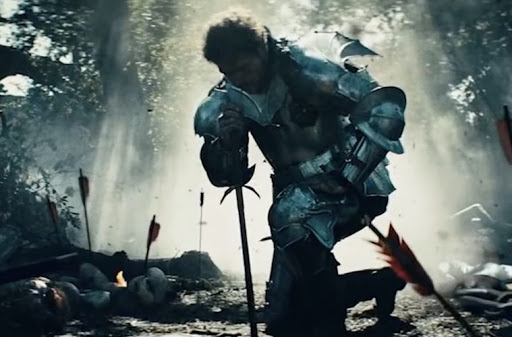

We couldn't turn around
우리 사이가 나아질리가
'Til we were upside down
완전히 바뀌지 않는 이상
I'll be the bad guy now
그래, 내가 또 내가 나쁜 놈이야
But know I ain't too proud
물론 자랑스러운 건 아냐
I couldn't be there
나도 어찌할 수 없었네
Even when I try
내가 노력은 했다만
You don't believe it
넌 믿음조차 주질 않네
We do this every time
우린 항상 이런 식이야
[Chorus]
Seasons change and our love went cold
계절은 바뀌고, 우리 사랑은 얼어버렸어
Feed the flame 'cause we can't let it go
불을 쬐야하지 않을까, 우리 이대로 끝낼 순 없어
Run away but we're running in circles
도망치려 하지만, 우린 계속 제자리걸음
Run away, run away
도망치려 하지만, 떠나려 하지만
I dare you to do something
무슨 짓이든 한 번 해보라고
I'm waiting on you again, so I don't take the blame
한 번 더 널 기다리고 있어, 난 최선을 다했네
Run away but we're running in circles
도망치려 하지만, 우린 계속 제자리걸음
Run away, run away, run away
도망치지만, 떠나려 하지만
[Verse 2]
Let go
놓아줘
I got a feeling that it's time to let go
문득 생각이 들었어, 이제는 놓아줄 때인가 봐
I say so
사실, 굳이 말하자면
I knew that this was doomed from the get-go
난 언젠가 이렇게 될 거라는 거 처음부터 알았어
You thought that it was special, special
넌 우리 관계를 너무 특별하게 생각했나 봐
But it was just a sex though, the sex though
지금 보면, 몸으로만 나눈 사랑 아니었나 몰라
And I still hear the echoes (The echoes)
이제는 메아리같이 똑같은 말만 주고 받고
I got a feeling that it's time to let it go, let it go
확실한 것 같아, 우리 이제는 떨어져야 하나 봐, 그런가 봐
[Chorus]
Seasons change and our love went cold
계절은 바뀌고, 우리 사랑은 얼어버렸어
Feed the flame 'cause we can't let it go
불을 쬐야하지 않을까, 우리 이대로 끝낼 순 없어
Run away but we're running in circles
도망치려 하지만, 우린 계속 제자리걸음
Run away, run away
도망치려 하지만, 떠나려 하지만
I dare you to do something
무슨 짓이든 한 번 해보라고
I'm waiting on you again, so I don't take the blame
한 번 더 널 기다리고 있어, 난 최선을 다했네
Run away but we're running in circles
도망치려 하지만, 우린 계속 제자리걸음
Run away, run away, run away
도망치지만, 떠나려 하지만
[Bridge]
Maybe you don't understand what I'm going through
너는 내가 얼마나 힘든지도 모르는군
It's only me, what you got to lose?
그래 내 잘못이지, 네가 잃을 건 없구?
Make up your mind, tell me, what are you gonna do?
마음 단단히 먹어, 어떻게 할래 앞으로?
It's only me, let it go
그래 내 잘못이지, 서로 갈 길 가자고